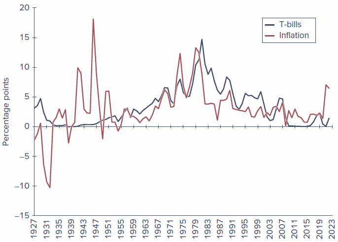
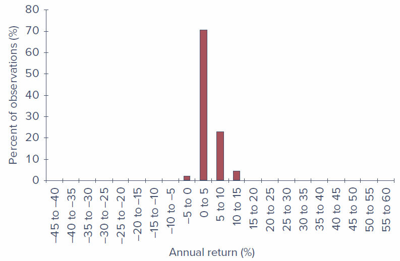
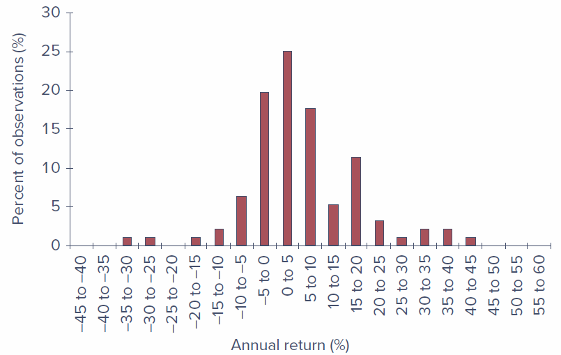
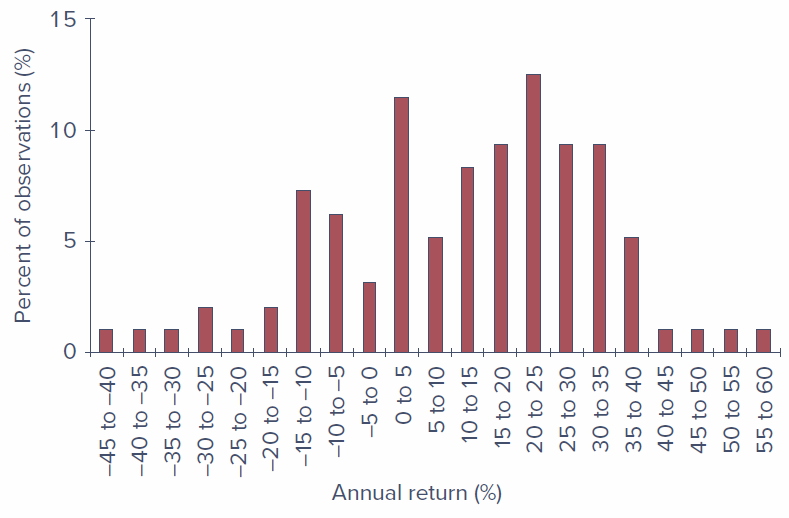
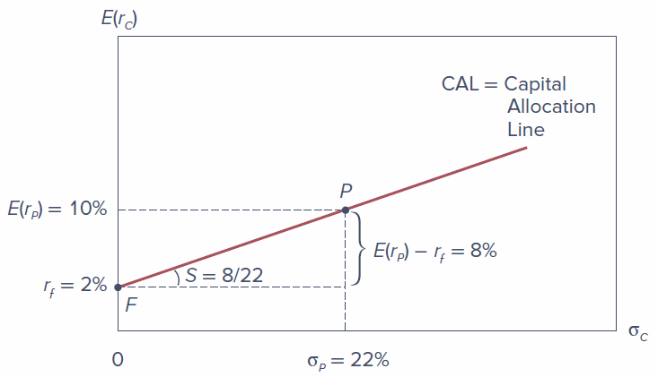

Chapter 5 – Risk, Return, and the Historical Record
Learning Objectives
LO 5-1 Compute various measures of return on multiyear investments.
LO 5-2 Use either historical data on the past performance of stocks and bonds or forward-looking scenario analysis to characterize the risk and return features of these investments.
LO 5-3 Determine the expected return and risk of portfolios that are constructed by combining risky assets with risk-free investments in Treasury bills.
LO 5-4 Use the Sharpe ratio to evaluate the performance of a portfolio and provide a guide for capital allocation.
5.1 Rates of Return
The holding-period return (HPR) on a share of stock reflects both the increase (or decrease) in the price of the share over the investment period as well as any dividend income the share has provided. It is defined as dollars earned (price appreciation plus dividends) per dollar invested:
\[ HPR = \frac{\text{Ending price} - \text{Beginning price} + \text{Cash dividend}}{\text{Beginning price}} \tag{1}\]
The percentage return from dividends, cash dividends divided by beginning price, is called the dividend yield, and the percentage price increase is called the capital gains yield. Therefore, the dividend yield plus the capital gains yield equals the HPR.
Example 5.1 — Holding-Period Return: The price of a share of a stock is currently $100, and your time horizon is one year. You expect the cash dividend during the year to be $4, so your expected dividend yield is 4%. Suppose your best guess is that the price one year from now will be $110 per share. If you are right, the HPR will be:
\[ HPR = \frac{\$110 - \$100 + \$4}{\$100} = 0.14, \text{ or } 14\% \]
Your predicted capital gain is $10, which implies a capital gains yield of $10/$100 = 0.10, or 10%. The HPR is the sum of the dividend yield plus the capital gains yield: 4% + 10% = 14%.
5.1.1 Measuring Investment Returns over Multiple Periods
The HPR is a simple and unambiguous measure of investment return over a single period. But often you will be interested in average returns over longer periods of time. There are several alternative measures of performance, each with its own advantages and shortcomings: the arithmetic average, the geometric average, and the dollar-weighted return.
| 1st Year | 2nd Year | 3rd Year | 4th Year | |
|---|---|---|---|---|
| Assets under management at start of year ($ million) | 1.0 | 1.2 | 2.0 | 0.8 |
| Holding-period return (%) | 10.0 | 25.0 | (20.0) | 20.0 |
| Total assets before net inflows | 1.1 | 1.5 | 1.6 | 0.96 |
| Net inflow ($ million)* | 0.1 | 0.5 | (0.8) | 0.6 |
| Assets under management at end of year ($ million) | 1.2 | 2.0 | 0.8 | 1.56 |
*New investment less redemptions and distributions, all assumed to occur at the end of each year.
5.1.1.1 Arithmetic Average
The arithmetic average of the annual returns is just the sum of the returns divided by the number of years:
\[ \text{Arithmetic average} = \frac{10 + 25 - 20 + 20}{4} = 8.75\% \]
The arithmetic average of past returns is a common forecast of performance for future periods.
5.1.1.2 Geometric Average
The geometric average equals the single per-period return that would give the same cumulative performance as the sequence of actual returns. We calculate the geometric average by compounding the actual period-by-period returns and then finding the single per-period rate that will compound to the same final value:
\[ (1 + 0.10) \times (1 + 0.25) \times (1 - 0.20) \times (1 + 0.20) = (1 + r_G)^4 \]
Solving for \(r_G\):
\[ r_G = [(1 + 0.10) \times (1 + 0.25) \times (1 - 0.20) \times (1 + 0.20)]^{1/4} - 1 = 0.0719, \text{ or } 7.19\% \tag{2}\]
The geometric return is also called a time-weighted average return because it ignores the year-by-year variation in funds under management.
5.1.1.3 Dollar-Weighted Return
The dollar-weighted average return is the internal rate of return (IRR) on the investment. To account for varying amounts under management, we treat the fund cash flows as we would a capital budgeting problem in corporate finance. The initial value of $1 million and the net cash inflows are treated as the cash flows associated with an investment “project.”
| Year 0 | Year 1 | Year 2 | Year 3 | Year 4 | |
|---|---|---|---|---|---|
| Net cash flow ($ million) | −1.0 | −0.1 | −0.5 | 0.8 | −0.6 + 1.56 = 0.96 |
The IRR is the interest rate that satisfies:
\[ 0 = -1.0 + \frac{-0.1}{1 + IRR} + \frac{-0.5}{(1 + IRR)^2} + \frac{0.8}{(1 + IRR)^3} + \frac{0.96}{(1 + IRR)^4} \tag{3}\]
The solution is IRR = 0.0338 = 3.38%. The dollar-weighted return in this example is smaller than the time-weighted return of 7.19% because the portfolio returns were higher when less money was under management — an unfavorable combination.
A fund begins with $10 million and reports the following monthly results (with negative figures in parentheses):
| Month 1 | Month 2 | Month 3 | |
|---|---|---|---|
| Net inflows (end of month, $ million) | 3 | 5 | 0 |
| HPR (%) | 2 | 8 | (4) |
Compute the arithmetic, time-weighted, and dollar-weighted average monthly returns.
5.1.2 Conventions for Annualizing Rates of Return
There are several ways to annualize rates of return. Returns on assets with regular intra-year cash flows are usually quoted as annual percentage rates (APRs), which annualize per-period rates using a simple interest approach, ignoring compound interest:
\[ APR = \text{Per-period rate} \times \text{Periods per year} \]
However, because it ignores compounding, the APR does not equal the rate at which your invested funds actually grow. The latter is called the effective annual rate (EAR). When there are \(n\) compounding periods in the year:
\[ 1 + EAR = \left(1 + \frac{APR}{n}\right)^n \tag{4}\]
Example 5.2 — Annualizing Treasury-Bill Returns: Suppose you buy a $10,000 face value Treasury bill maturing in six months for $9,900. The holding period return for this six-month investment is:
\[ HPR = \frac{0 + \$100}{\$9{,}900} = 0.0101 = 1.01\% \]
The APR on this investment is therefore \(1.01\% \times 2 = 2.02\%\). The effective annual rate is a bit higher: \(1 + EAR = (1.0101)^2 = 1.0203\), which implies that \(EAR = 2.03\%\).
With continuous compounding, the APR is related to EAR by:
\[ 1 + EAR = e^{APR} \tag{5}\]
or equivalently: \(APR = \ln(1 + EAR) = r_{cc}\)
5.2 Inflation and the Real Rate of Interest
When prices of goods and services change, we need to distinguish between nominal and real rates of return. The nominal interest rate is the rate at which the dollar value of your account grows. The real interest rate is the rate at which the goods you can buy with your funds grows.
The exact relationship is:
\[ 1 + r_{real} = \frac{1 + r_{nom}}{1 + i} \tag{6}\]
which can be rearranged to:
\[ r_{real} = \frac{r_{nom} - i}{1 + i} \tag{7}\]
A common approximation is:
\[ r_{real} \approx r_{nom} - i \tag{8}\]
The approximation rule overstates the real rate by the multiple \(1 + i\).
Example 5.3 — Real versus Nominal Rates: If the interest rate on a one-year CD is 8%, and you expect inflation to be 5% over the coming year, the approximation gives \(r_{real} = 8\% - 5\% = 3\%\). Using the exact formula: \(r_{real} = \frac{0.08 - 0.05}{1 + 0.05} = 0.0286\), or 2.86%. The approximation overstates the expected real rate by only 0.14 percentage point.
5.2.1 The Equilibrium Nominal Rate of Interest
Irving Fisher (1930) argued that the nominal rate ought to increase one-for-one with increases in the expected inflation rate. The Fisher equation is:
\[ r_{nom} = r_{real} + E(i) \tag{9}\]
Suppose the real rate of interest is 2%, and expected inflation is 4%, so that the nominal interest rate is about 6%. If expected inflation rises to 5%, the nominal interest rate should climb to roughly 7%. The increase in the nominal rate offsets the increase in expected inflation, giving investors an unchanged growth rate of purchasing power of 2%.
Suppose the real interest rate is 3% per year and the expected inflation rate is 8%. What is the nominal interest rate?
Suppose the expected inflation rate rises to 10%, but the real rate is unchanged. What must happen to the nominal interest rate?
5.2.2 Treasury Bills and Inflation, 1927–2022
| Average Annual Rates | Standard Deviation | |||||
|---|---|---|---|---|---|---|
| T-Bills | Inflation | Real T-Bill | T-Bills | Inflation | Real T-Bill | |
| Full sample | 3.28 | 3.06 | 0.32 | 3.09 | 3.97 | 3.80 |
| 1927–1951 | 0.95 | 1.80 | −0.48 | 1.24 | 6.06 | 6.34 |
| 1952–2022 | 4.11 | 3.50 | 0.61 | 3.13 | 2.85 | 2.34 |
Over the full sample, the average nominal rate on T-bills was 3.28%. However, the average inflation rate of 3.06% meant that the average real return on bills was only 0.32%. The Fisher relation appears to work far better when inflation is itself more predictable and investors can more accurately gauge the nominal interest rate they require to provide an acceptable real rate of return.

5.4 The Historical Record
5.4.1 Using Time Series of Returns
Scenario analysis begins with a probability distribution of future returns, but where do the probabilities come from? They are in large part informed by historical experience. The estimates of variance and standard deviation from a time series of returns, \(r_t\), are:
\[ \bar{r}_t = \frac{1}{n} \sum r_t; \qquad \text{Var}(r_t) = \frac{1}{n-1} \sum (r_t - \bar{r}_t)^2; \qquad SD(r_t) = \sqrt{\text{Var}(r_t)} \tag{16}\]
The \(n/(n-1)\) correction is sometimes called a correction for degrees of freedom bias.
5.4.2 Risk and Return: A First Look
The standard deviation of the return on stocks over the 1927–2022 period was 20.06%, nearly double that of T-bonds (12.20%) and more than six times that of T-bills (3.09%). That greater risk brought with it greater reward: the excess return on stocks averaged 8.55% per year.
| T-bills | T-bonds | Stocks | |
|---|---|---|---|
| Average | 3.28 | 5.56 | 11.84 |
| Risk premium | na | 2.27 | 8.55 |
| Standard deviation | 3.09 | 12.20 | 20.06 |
| Max | 14.71 | 41.68 | 57.35 |
| Min | −0.02 | −33.33 | −44.04 |
The figures below show the frequency distributions of annual returns on these three portfolios. The greater volatility of stock returns compared to T-bill or T-bond returns is immediately apparent.



Historical returns on stocks exhibit somewhat more frequent, large deviations from the mean than would be predicted from a normal distribution. The actual frequencies of extreme returns, both high and low, are higher than would be predicted by the normal distribution — evidence of a fat-tailed distribution. Nevertheless, extreme returns are in fact quite uncommon, especially in more recent years, so it is not unreasonable to accept the simplification offered by normality as an acceptable approximation.
5.5 Asset Allocation Across Risky and Risk-Free Portfolios
History shows that long-term bonds have been riskier investments than investments in Treasury bills and that stock investments have been riskier still. At the same time, the riskier investments have offered higher average returns. But investors do not make all-or-nothing choices from these investment classes.
Asset allocation is the allocation of an investment portfolio across broad asset classes. Capital allocation to risky assets is the fraction of the portfolio placed in risky assets. The complete portfolio is the entire portfolio including risky and risk-free assets.
5.5.1 The Risk-Free Asset
Only the government can issue default-free (Treasury) bonds and bills. Treasury bills are commonly viewed as the risk-free asset. In practice, most investors treat a broader range of money market instruments as effectively risk-free assets, since the risk of any of these money market instruments is trivial compared to that of long-term bonds or stocks.
5.5.2 Portfolio Expected Return and Risk
Let \(y\) be the proportion of the investment budget allocated to the risky portfolio \(P\), and \((1 - y)\) be the proportion in the risk-free asset with return \(r_f\).
Expected return of the complete portfolio:
\[ E(r_C) = r_f + y\left[E(r_P) - r_f\right] \tag{17}\]
Standard deviation of the complete portfolio:
\[ \sigma_C = y \, \sigma_P \tag{18}\]
Numerical example: Suppose \(E(r_P) = 10\%\), \(\sigma_P = 22\%\), and \(r_f = 2\%\), so the risk premium on the risky asset is 8%. If \(y = 0.5\):
- \(E(r_C) = 0.5 \times 2\% + 0.5 \times 10\% = 6\%\)
- Risk premium of complete portfolio = 6% − 2% = 4% (half of the risky portfolio’s risk premium)
- \(\sigma_C = 0.5 \times 22\% = 11\%\) (half of the risky portfolio’s standard deviation)
What are the expected return, risk premium, standard deviation, and ratio of risk premium to standard deviation for a complete portfolio with \(y = 0.75\)?
5.5.3 The Capital Allocation Line
The capital allocation line (CAL) depicts the risk-return combinations available by varying capital allocation (choosing different values of \(y\)). The slope, \(S\), of the CAL equals the increase in expected return that an investor can obtain per unit of additional standard deviation — the Sharpe ratio:
\[ S = \frac{E(r_P) - r_f}{\sigma_P} = \frac{10 - 2}{22} = 0.36 \tag{19}\]
The Sharpe ratio is the same for all complete portfolios that plot on the capital allocation line. While the risk-return combinations differ according to the investor’s choice of \(y\), the ratio of reward to risk is constant.

| Expected Return | Risk Premium | Standard Deviation | Sharpe Ratio | |
|---|---|---|---|---|
| Portfolio P | 10% | 8% | 22% | 8/22 = 0.36 |
| Portfolio C (\(y = 0.5\)) | 6% | 4% | 11% | 4/11 = 0.36 |
Example 5.7 — Levered Complete Portfolios: Suppose the investment budget is $300,000, and an investor borrows an additional $120,000, investing the $420,000 in the risky asset. Then \(y = 420{,}000/300{,}000 = 1.4\) and \(1 - y = -0.4\) (a borrowing position).
- \(E(r_C) = (-0.4) \times 2\% + 1.4 \times 10\% = 13.2\%\)
- \(\sigma_C = 1.4 \times 22\% = 30.8\%\)
- Sharpe ratio = \(11.2\% / 30.8\% = 0.36\) (unchanged)
5.5.4 Risk Aversion and Capital Allocation
More risk-averse investors will choose portfolios near point \(F\) (risk-free) on the capital allocation line. More risk-tolerant investors will choose points closer to \(P\), or even beyond \(P\) using leverage.
The optimal capital allocation to the risky portfolio is found by dividing the risky portfolio’s price of risk by the investor’s risk aversion:
\[ y^* = \frac{E(r_P) - r_f}{A \, \sigma_P^2} \tag{20}\]
This equation has the intuitive implication that the optimal allocation to the risky portfolio is directly proportional to its price of risk and inversely proportional to the investor’s risk aversion.
5.6 Passive Strategies and the Capital Market Line
A passive strategy is based on the premise that securities are fairly priced, and thus avoids the costs involved in undertaking security analysis. Such strategies are called indexing: the investor chooses a portfolio of all the stocks in a broad market index such as the S&P 500.
The capital market line (CML) is the capital allocation line provided by one-month T-bills and a broad index of common stocks. A passive strategy using the broad stock market index as the risky portfolio generates an investment opportunity set represented by the CML.
5.6.1 Historical Evidence on the Capital Market Line
| Period | Average | Standard Deviation | Sharpe Ratio |
|---|---|---|---|
| 1927–2022 | 8.55 | 20.39 | 0.42 |
| 1927–1950 | 9.33 | 26.57 | 0.35 |
| 1951–1974 | 6.63 | 20.32 | 0.33 |
| 1975–1998 | 11.00 | 14.40 | 0.76 |
| 1999–2022 | 7.25 | 19.43 | 0.37 |
The Sharpe ratio for the overall 1927–2022 period was 0.42. Sharpe ratios across subperiods vary dramatically, ranging from 0.33 to 0.76. The lesson is that we should be very humble when we use historical data to forecast future performance.
5.6.2 Costs and Benefits of Passive Investing
The annual expense ratio of an active stock mutual fund averages around 0.8% of invested assets. In contrast, you can invest in a stock market index fund with an expense ratio of 0.05% or even less.
Because of the power of compounding, an extra 1% of annual costs can have large consequences. With a risk-free rate of 2% and a risk premium of 8%, you might expect your wealth to grow by a multiple of \(1.10^{30} = 17.45\) over a 30-year investment horizon. If fees are 1%, your net return is reduced to 9%, and your wealth grows by a multiple of only \(1.09^{30} = 13.26\) — that seemingly small management fee reduces your final wealth by about one-quarter.
The CML using the passive market index is not obviously inferior to active strategies.
Key Terms
holding-period return (HPR) — Rate of return over a given investment period.
arithmetic average — The sum of returns in each period divided by the number of periods.
geometric average — The single per-period return that gives the same cumulative performance as the sequence of actual returns.
dollar-weighted rate of return — The internal rate of return on an investment.
nominal interest rate — The interest rate in terms of nominal (not adjusted for purchasing power) dollars.
real interest rate — The growth rate of purchasing power derived from an investment.
inflation rate — The rate at which prices are rising, measured as the rate of increase of the CPI.
scenario analysis — A list of possible economic scenarios, the likelihood of each, and the HPR that will be realized in each case.
probability distribution — List of possible outcomes with associated probabilities.
expected return — The mean value of the distribution of HPR.
variance — The expected value of the squared deviation from the mean.
standard deviation — The square root of the variance.
value at risk (VaR) — Measure of downside risk. The worst loss that will be suffered with a given probability, often 1% or 5%.
kurtosis — Measure of the fatness of the tails of a probability distribution relative to that of a normal distribution. Indicates likelihood of extreme outcomes.
skew — Measure of the asymmetry of a probability distribution.
risk-free rate — The rate of return that can be earned with certainty, often measured by the rate on Treasury bills.
risk premium — An expected return in excess of that on risk-free securities.
excess return — Rate of return in excess of the risk-free rate.
risk aversion — Reluctance to accept risk.
price of risk — The ratio of portfolio risk premium to variance.
Sharpe ratio — Ratio of portfolio risk premium to standard deviation.
mean-variance analysis — Evaluating portfolios according to their expected returns and standard deviations (or variances).
asset allocation — Allocation of an investment portfolio across broad asset classes.
capital allocation to risky assets — The choice between risky and risk-free assets.
complete portfolio — The entire portfolio including risky and risk-free assets.
capital allocation line (CAL) — Plot of risk-return combinations available by varying portfolio allocation between a risk-free asset and a risky portfolio.
passive strategy — Investment policy that avoids security analysis. Often entails indexing.
capital market line (CML) — The capital allocation line using the market index portfolio as the risky asset.